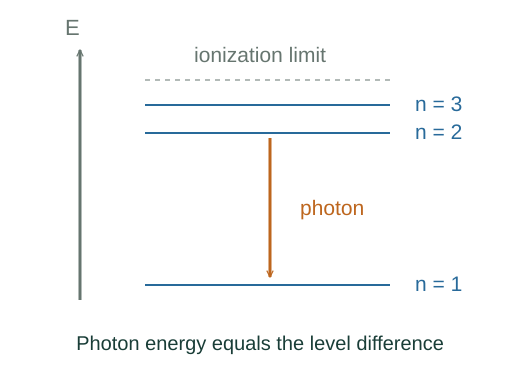

Derive hydrogen energies from the radial Schrödinger equation
Insert ψ = R(r)Yℓm into the three-dimensional Schrödinger equation and use the angular eigenvalue ℓ(ℓ + 1)ℏ². Setting u = rR removes the first radial derivative.
What the symbols mean
μ: electron–proton reduced mass; ke = 1/(4πε₀); a₀ = ℏ²/(μkee²); κ = √(−2μE)/ℏ for a bound state.
When this applies
Nonrelativistic Coulomb potential, no fine structure or radiative corrections, normalizable stationary states with E < 0.
Developing the argument

Separate radial and angular motion
Insert ψ = R(r)Yℓm into the three-dimensional Schrödinger equation and use the angular eigenvalue ℓ(ℓ + 1)ℏ². Setting u = rR removes the first radial derivative.
A closer lookWhat physical equation is being solved? ↗Factor the required endpoint behaviour
Regularity at zero requires u proportional to r^(ℓ + 1); decay at infinity requires exp(−κr). Set u = r^(ℓ + 1)exp(−κr)F(ρ) with ρ = 2κr and substitute.
Terminate the series to preserve normalization
A power series F = Σajρʲ has recursion a(j+1)/aj = [j + ℓ + 1 − 1/(κa₀)]/[(j + 1)(j + 2ℓ + 2)]. A nonterminating regular solution grows too fast at infinity. Termination at j = nr requires its numerator to vanish.
Convert decay scale to energy
Substitute κ = 1/(na₀) into E = −ℏ²κ²/(2μ), then substitute the definition of a₀. This produces the energy spectrum without literal Bohr orbits.
A worked example
Replacing μ by the electron mass gives the fixed-proton approximation En ≈ −13.6 eV/n². Reduced mass gives the leading finite-proton-mass correction.
Derivation behind this calculation ↗A point to keep straight
The principal integer n comes from radial regularity and normalizability. It does not assert angular momentum nℏ.
Check the assumptions and derivation ↗